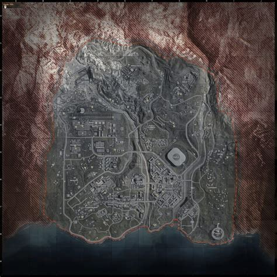

Call of Duty WARZONE est un Battel royal (BR) faisant partie de la lignée Call of Duty.
PC via le launcher Battle.net le launcher de Blizzard Entertainment
Playstation 4 et Playstation 5
Xbox One X, Xbox One S et XBox séries X
Il est developpé par Raven Software, l'un des nombreux studios de développement d'Activision.
Warzone est donc un FPS où les 150 joueurs présents par partie doivent
survivre pour finir seul pour faire Top 1 et gagner la partie sur une carte où un gaz mortel progresse leur laissant de moins en moins de place pour se cacher des autres joueurs.
Pour gagner il est possible de jouer en:
solo (150 teams de 1)
duo (75 teams de 2)
trio (50 teams de 3)
quatuor (37 teams de 4)
Pour les modes de jeux ou les joueurs sont plus de 1 par team (duo, trio et quatuor), c'est tous les joueurs de la team qui doivent finir seul en éliminant les autres équipes.
Comme dit ci-dessus, WARZONE contient un mode de jeux "classique" (solo, duo, trio, quatuor) et d'autres modes de jeux, certains éphémère et d'autres permanents. En mode de jeux permanents nous avons:
Le mode "Classique"
Le mode "Pillage: Argent sale"
Pour les modes de jeux éphémères, nous avons actuellement:
Le mode "Mini royal renaissance en solo / duo / trio / quatuor"
Le mode "Résurgence en solo / duo / trio / quatuor"
Pour voir les différents modes de jeux cliquez ici